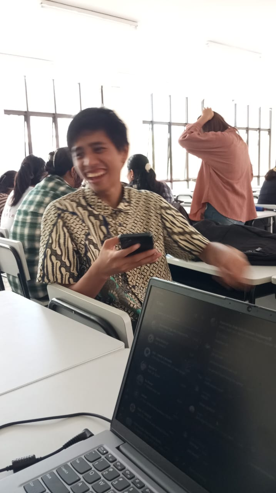
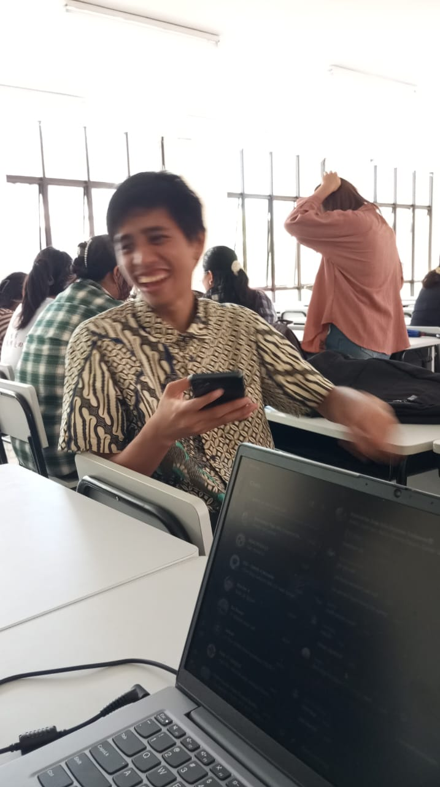
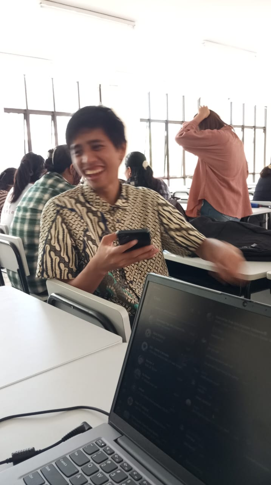

Gallery

 

Ini adalah rekam jejak saya.

Artikel ini membahas bagaimana sistem perbudakan berkembang sejak zaman Mesir Kuno, Romawi, hingga perdagangan budak di Atlantik dan akhirnya penghapusannya di berbagai negara.
Di Mesir Kuno, perbudakan umumnya terkait dengan tawanan perang atau individu yang jatuh ke dalam jeratan utang. Budak sering kali digunakan untuk membangun monumen besar seperti piramida, kuil, dan istana. Namun, beberapa budak memiliki status yang lebih baik dan dapat bekerja sebagai pelayan rumah tangga atau administrator.
Yunani dan RomawiDi Yunani Kuno, perbudakan adalah bagian penting dari ekonomi dan kehidupan sosial. Banyak rumah tangga kaya memiliki budak yang bekerja sebagai pelayan atau buruh. Di kota seperti Athena, beberapa budak bahkan memiliki hak terbatas dan dapat memperoleh kebebasan mereka. Sementara itu, Kekaisaran Romawi menggunakan budak dalam skala yang jauh lebih besar. Romawi menaklukkan wilayah luas dan membawa ribuan tawanan perang yang kemudian dijadikan budak. Mereka bekerja di pertanian, tambang, dan rumah tangga. Pemberontakan budak terkenal, seperti yang dipimpin oleh Spartacus pada abad ke-1 SM, menunjukkan besarnya pengaruh perbudakan dalam masyarakat Romawi.
Pada abad ke-16 hingga ke-19, perdagangan budak trans-Atlantik menjadi salah satu bentuk perbudakan yang paling brutal dalam sejarah. Eropa, Afrika, dan Amerika terlibat dalam jaringan perdagangan yang mengangkut jutaan orang Afrika ke benua Amerika untuk dijadikan tenaga kerja di perkebunan gula, kapas, dan tembakau.
Para budak diperlakukan dengan kejam, diangkut dalam kondisi yang mengerikan, dan sering kali tidak memiliki hak sama sekali. Sistem perbudakan ini berkontribusi besar terhadap pembangunan ekonomi negara-negara kolonial seperti Inggris, Prancis, Spanyol, Portugal, dan Amerika Serikat.
Abolisi dan Gerakan Penghapusan Perbudakan Seiring berkembangnya pemikiran tentang hak asasi manusia, gerakan abolisi (penghapusan perbudakan) mulai muncul di berbagai negara. Revolusi Prancis (1789) membawa gagasan kebebasan dan kesetaraan, sementara Inggris menghapus perdagangan budak pada tahun 1807 dan perbudakan secara keseluruhan pada 1833. Di Amerika Serikat, perang saudara (1861–1865) berujung pada penghapusan perbudakan melalui Amendemen ke-13 pada tahun 1865.Mengulas bagaimana perbudakan membentuk ekonomi, budaya, dan struktur sosial di banyak negara serta dampaknya yang masih terasa hingga kini.
Perbudakan memainkan peran besar dalam membangun ekonomi banyak negara, terutama di Amerika, Eropa, dan beberapa wilayah di Asia. Budak dijadikan tenaga kerja gratis dalam sektor pertanian, industri, dan perdagangan, yang memperkaya kelompok tertentu sementara merugikan kelompok lainnya. Akibatnya, kesenjangan ekonomi antara ras dan kelompok etnis yang mengalami perbudakan masih terasa hingga kini. Sebagai contoh, di Amerika Serikat, keturunan para budak masih menghadapi hambatan ekonomi yang lebih besar dibandingkan kelompok lain. Kurangnya akses terhadap pendidikan dan kepemilikan properti sejak masa perbudakan menyebabkan kesenjangan kekayaan yang masih sulit diatasi hingga sekarang
Selain ekonomi, perbudakan juga meninggalkan warisan sosial dalam bentuk diskriminasi dan rasisme sistemik. Banyak negara yang pernah mengandalkan perbudakan masih berjuang melawan ketidakadilan rasial. Struktur sosial yang dibangun selama era perbudakan terus memengaruhi kebijakan publik, sistem hukum, dan peluang sosial bagi kelompok minoritas. Sebagai contoh, diskriminasi berbasis ras masih sering terjadi dalam perekrutan kerja, pendidikan, dan perumahan. Ketidaksetaraan ini merupakan hasil langsung dari kebijakan masa lalu yang mendukung eksploitasi dan ketidakadilan terhadap kelompok tertentu.
Perbudakan tidak hanya mencabut hak-hak ekonomi dan sosial, tetapi juga merusak identitas budaya kelompok yang diperbudak. Banyak keturunan budak yang kehilangan bahasa, tradisi, dan akar budaya mereka karena kebijakan asimilasi paksa yang diterapkan oleh pemilik budak. Namun, meskipun mengalami tekanan dan penghapusan budaya, banyak komunitas keturunan budak yang berhasil mempertahankan dan menghidupkan kembali warisan mereka. Musik, seni, dan sastra yang terinspirasi dari pengalaman perbudakan telah menjadi bagian penting dalam budaya populer di banyak negara.
Meskipun perbudakan tradisional telah berakhir secara hukum, bentuk-bentuk baru dari eksploitasi tenaga kerja masih ada di dunia modern. Perdagangan manusia, kerja paksa, dan perbudakan utang adalah beberapa contoh bagaimana eksploitasi masih berlangsung hingga saat ini. Banyak pekerja di sektor manufaktur, pertanian, dan konstruksi di berbagai negara masih mengalami kondisi kerja yang mirip dengan perbudakan.
Perbudakan telah dihapuskan secara hukum, tetapi dampaknya masih terasa dalam berbagai aspek kehidupan modern. Kesenjangan ekonomi, diskriminasi sosial, kehilangan identitas budaya, dan perbudakan modern adalah beberapa warisan yang masih perlu diatasi. Untuk membangun dunia yang lebih adil, penting bagi masyarakat global untuk terus mengakui dan memahami sejarah perbudakan serta berupaya menghapus dampak negatifnya di masa kini.
Mengeksplorasi bagaimana perbudakan masih ada dalam bentuk perdagangan manusia, kerja paksa, dan eksploitasi tenaga kerja di berbagai industri saat ini.
Perdagangan manusia adalah salah satu bentuk perbudakan modern yang paling mengkhawatirkan. Setiap tahun, ribuan orang—terutama perempuan dan anak-anak—diculik, ditipu, atau dijual ke dalam industri eksploitasi seksual dan kerja paksa. Jaringan perdagangan manusia beroperasi secara global, dengan pelaku yang memanfaatkan kemiskinan dan ketidaksetaraan sebagai alat untuk merekrut korban. Korban sering kali dijanjikan pekerjaan yang layak, tetapi akhirnya terjebak dalam kondisi kerja yang tidak manusiawi tanpa jalan keluar.
Kerja paksa terjadi ketika seseorang dipaksa bekerja dalam kondisi yang tidak adil, sering kali tanpa gaji atau dengan upah yang sangat minim. Sektor pertanian, konstruksi, manufaktur, dan perikanan adalah beberapa industri yang sering dikaitkan dengan kerja paksa. Banyak pekerja migran yang menjadi korban sistem ini. Tanpa akses ke perlindungan hukum, mereka dipaksa bekerja dengan jam kerja panjang dalam kondisi berbahaya. Di beberapa kasus, dokumen mereka disita oleh pemberi kerja, sehingga mereka tidak bisa melarikan diri atau mencari bantuan.
Eksploitasi seksual adalah salah satu bentuk perbudakan modern yang paling mengerikan. Ribuan perempuan dan anak-anak setiap tahun dipaksa menjadi pekerja seks dalam kondisi yang tidak manusiawi. Banyak dari mereka mengalami kekerasan fisik, psikologis, dan seksual tanpa harapan untuk bisa melarikan diri. Jaringan prostitusi paksa sering kali melibatkan sindikat kriminal yang beroperasi di berbagai negara. Dengan semakin berkembangnya teknologi dan internet, eksploitasi seksual juga merambah dunia digital, dengan perdagangan manusia yang semakin sulit dideteksi.
Email: aldomailangkay8@gmail.com
Telepon: 08123456789